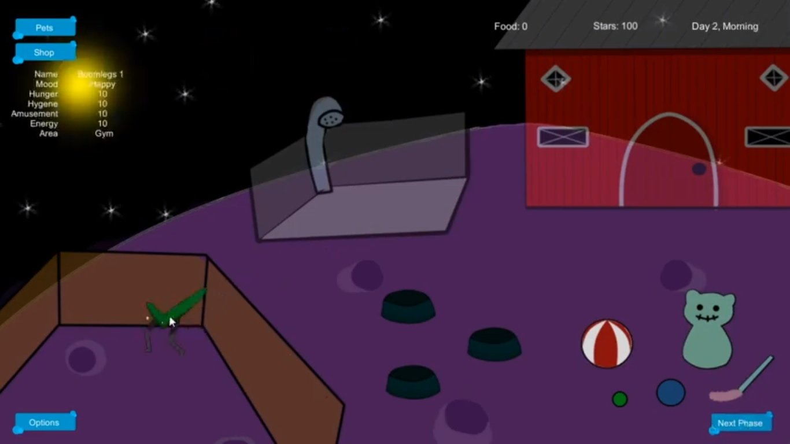

Center for Creativity Connect
- Course: Senior Capstone Design
- Number of Members: 6
Center for Creativity Connect is an application created for the nonprofit organization The Chuck Jones Center for Creativity (CJCC). The purpose of this app is to provide a foundation for CJCC to connect their teaching artists with a mobile and accessible process. The app is dedicated to connect CJCC's network of teaching artists with the ability to sign up for different art programs and volunteer work through their mobile device. The application would allow the teaching artists to sign up with an account and log in to the system to apply for available art programs if they have the necessary skills and level of expertise. Users can also receive notifications about their upcoming programs and have an option the teachers to check in to a program once it starts.

I worked as part of the design and documentation teams for this project. I participated in multiple meetings with our sponsor Craig Kausen, the owner of CJCC and grandson of famous character designer Chuck Jones, to elicit necessary requirements to create the app. As part of the documentation team, I worked to ensure that all requirements were correct, clear, and concise. We also were in charge of communicating this information to the other group members to make sure everybody was caught up and understood what the requirements were. We then analyzed the requirements and narrowed down the features that were necessary for the Minimum Viable Product. I also worked in the design team, collaborating with the group's lead designer to decide on the application's overall interface and functionalities. We used a bright blue color scheme because our sponsor is about creativity and fun, but also emphasized simple features that any teaching artist, regardless of age or technological knowledge, would be able to use easily.
Our group faced multiple challenges along the way, the most prominent being scope creep. Because the entire process of accepting and rejecting sign-ups relied on a separate desktop application for the CJCC administrators, we had to decline creating this as there would be less time to complete the mobile application. This was to ensure that the mobile application was finished by the deadline, rather than leaving CJCC with unfinished products. We also faced problems with designing the visual interface for the application, as there were differing opinions about whether we should focus on creativity or usability. In the end, we decided to focus more on usability so users would be able to view pages easily without major distractions. We overcame all of these hurdles together and successfully completed the product for CJCC.
Gratitude Journal

- Course: User Interaction Software
- Number of Members: 6
Gratitude Journal is a personal journal application where users can submit daily entries of things that they are grateful for. The application was created using Ionic and incorporated Firebase to store user data in a database. The AI program embedded in the app develops further as the user continues to input more entries and will suggest articles for the user to read based on their replies and interests. The app promotes positivity and gratefulness towards multiple things in life such as family, friends, and small items that bring happiness. From the start, our main focus was not to create the app based on curing mental health, but instead to make it a resource for individuals who need it. Since therapy can be expensive, especially for busy college students, the app would be a more accessible and cheaper alternative that will be available through mobile devices.
My main role in this project was to conduct research on various things related to our topic. I looked up articles related to AI/ML technologies that were easy to implement in the application, as well as different types of mental disabilities and illnesses that we would accomodate for with the app features. Since our early adopters and main audience were college students, we focused on depression and the various disadvantages they have trying to balance their school work and personal lives.

I also participated in designing and testing the application. In the early stages of our prototype, we went with a dark and simple theme so the user would be able to use the app as a blank canvas for their personal journal entries. The main question was focused on what the user was grateful for every day, in which the user would type a response to the question. After creating a quick prototype of our initial app design on Adobe XD, we then tested its functionality with six different users.

After initial user testing, we received feedback from users that expressed interest in the application, but would like the system to be more engaging. We decided to base the app off of a garden/forest theme, incorporating a color palette of light shades of green because green is a soothing color that represents tranquility and nature. The "streak" feature that was originally an emoji filling up became a plant that symbolized growth each time the user submitted a journal entry.
Twitter Sentiment Analysis
- Course: Medical Informatics
- Number of Members: 6
Twitter Sentiment Analysis was the name of a research project in which we worked with Lu He, a Informatics PhD student at UCI, research and analyze data about human papilloma virus (HPV), a sexually transmitted disease, and its vaccine. We were tasked with analyzing the data Lu provided for us, which involved Twitter users "tweeting" about HPV and what they thought about it or its vaccine. This data came from a computer generated list that involved "HPV" as a keyword or a hashtag (#HPV). We analyzed the sentimental meaning behind the tweets, determining the user's tone and level of seriousness based on the content of their tweet. After discussing the sentimental context of each tweet, we would then categorize them using a list of criteria:
1. Relevance
- Whether or not the tweet was relevant to our study. Some irrelevant tweets included those that actually did not talk about HPV or its vaccine and mentioned it out of context for a different topic.
2. Seriousness
- Whether or not the tweet was serious about its stance on HPV. Serious tweets, regardless of its sentiment, mentioned the HPV vaccine in a non-joking manner. Non-serious tweets oftentimes would make crude jokes and comments about sex and STD infections.
3. Sentiment
- If the tweet was positive, negative, neutral, or ambiguous. Positive tweets involved tweets that spoke in positive terms about the HPV vaccine and supported it. Negative tweets were deemed so if the sentiment was not in favor of the HPV vaccine or spoke of negative experiences related to HPV. Tweets were categorized as neutral if there was no sentiment that could be elicited, or if the tweet was dedicated to sharing an article. Ambiguous tweets were those we could not categorize into a positive or negative sentiment if there was not enough context for us to decide.

As we had a lot of data to work with, our group split up into two teams of three members each. I worked closely with the group's project manager (CEO) and communication lead (CCO) to analyze tweets to be accurate as possible to the original user's intentions. Having a Twitter account myself, I assisted my subgroup with checking each Twitter user and opening up threads to gain more insight on the tweet we were analyzing. Each week, we also kept an observation journal of what we realized from our research and held meetings with Lu to discuss our findings and confirm what to do next.

I also worked with the CCO to present our findings on a website, which included information about our research methods and analysis results. The website can be accessed here.
FromYouFlowers Redesign
- Course: Human-Computer Interaction and Evaluation
- # of Members: 5
FromYouFlowers is an online flower site available for
customers to buy flower bouquets online. However, we noticed that this website was
unorganized and cluttered with regards to its navigation and organizational structure.
We took it upon ourselves to redesign the website in a way that would be more beneficial for users
to navigate through and find what they need using a powerful search bar and less cluttered navigation bar.

The picture above is the current user interface design for FromYouFlowers. We decided to redesign the navigation bar and search bars for our main focus. As seen in the picture, the navigation bar has many tabs of different names but many of them seem irrelevant and inconsistent. For example, "Birthday" could easily be placed under "Occasions", and the "Flowers" tab (enlarged to show the subcategories) includes other topics than flower types such as "Grower's Collection" and "Next Day Delivery". The search bar is also less visible to someone who may be visiting the website for the first time, as it is to the side of the navigation bar. This puts the search bar in a more obscure area and therefore is less noticeable compared to the multiple tabs for the navigation bar.


This is the design that we have proposed to make FromYouFlowers more user friendly and personalized. We interviewed potential customers of FromYouFlowers and did research on fellow competitors to create the best overall experience that would benefit both the company and their audience.
Cosmic Eggstravaganza
- Course: Computer Game Development
- # of Members: 5
- Cosmic Eggstravaganza Website
- Design Document
"Cosmic Eggstravaganza" is a pet simulation game that takes place in space. Players are stuck on an asteroid in space and are unable to get back home to their home planet without a spaceship. The main gameplay consists of the players raising unique pets and monsters on their farm by clicking and dragging them to various areas to raise their stats. Once players feel like their pets are strong and mature enough, they can then sell the pets to gain more money. The ultimate goal is to raise enough money to buy a new spaceship and go home.
My main role in this project was lead artist. I created the art for everything in the game, which included the pets, background, and assets for the user interface. All of the art was sketched out on paper first before doing lineart and coloring through Adobe Photoshop. I also was in charge of completing the design document, detailing the game's story, assets, characters, and more. The game itself was created by our three programmers using Unity. Our marketing director created the game's website and found sound assets from the Unity store.
The challenges we faced while creating Cosmic Eggstravaganza were mostly affected by time constraints. As we only had ten weeks to complete the game, we decided early on that the game would consist on more simple controls and a straightforward goal. Furthermore, our concept was a pet raising simulator, which could be catered to any type of player including young children and elderly people. Another big challenge was that we only had one artist (which ended up being me) to create the art for the game. I managed to overcome this on my own and finish most of the necessary art required for our final prototype. However, I regret not being able to create more pets and refine the game's background to be cleaner and more polished.